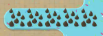

Kartenentwicklung
Die Karte besteht aus sog. Tiles, Texturblöcken, welche zu einem Bild wie ein Puzzle zusammengelegt werden.
Sie sind zwar als Textur gedacht, können aber mit dem Spieler interagieren.

Es gibt aber auch Objekte, welche 3-Dimensional wirken und andere Tiles verdecken.
Diese Figuren sind schwerer zu machen, aber dafür sehen sie viel besser aus,
da der Hintergrund im Gegensatz zu Tiles immer noch sehbar ist.